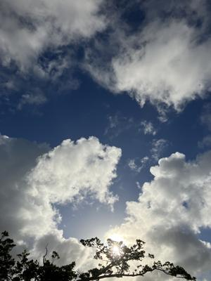
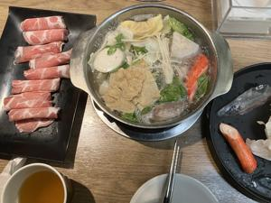
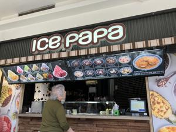

うるがいの話 ある日
最新: 落陽吉田拓郎【うるがいの話 ある日】とは 一日だけのプログです
『うるがいの話』の最新一日だけのプログで、通信料が少なく経済的だ。カニの画像をクリックすると全ての日付が載る『うるがいの話』サイトを表示します
|
|
【うるがいの話】 うるがい(ｳﾙｶﾞｲ urugai)とは、『もずくがに』の名前でとても大きくなります。 |
|---|---|
|
|
【カミマヤーの話】 猫のことを方言でマヤーといいます。カミマヤー（kamimayaa）とは、神の猫のことです。 |
|
【たながぁの音楽】 たながぁ（ﾀﾅｶﾞｰ tanagaa）とは手長えびのことで、何種類かあり大きいのは車 エビぐらいになります。 |

|
【ぶながぁの話】 ぶながぁ(ﾌﾞﾅｶﾞｰ bunagaa)とは、赤い髪の毛、赤い身体、そして身長は１ｍ２０ｃｍ ぐらい、川の蟹を食べているの目撃された。場所は沖縄県国頭郡大宜味村のと ある村僕の隣近所に住んでいる爺さんから、聞いた話です。 |
|
|
【ギーマの話】 ギーマ(giima)とは、山原の里山に咲くスズランに似た、 花を付けます。実は食べられます、 気が付くと口の周りが紫になっています。 |
2025年08月14日 (木）落陽吉田拓郎
15:49

ユーチューブ動画で三線の動画を作っています、次は吉田拓郎の『
落陽』を考えています。４月８日、台湾初日の昼食で相席となった
７０代夫婦の男性との会話である。フォーク世代ということで話は
もりあがったが、あれから４カ月も過ぎてしまった。宮崎から、那
覇に来てツーアに参加したとこと、６月には念願のスイスに行くと
言っていた。
４０年前、関西にいる頃、電車の中で松山（愛媛県）での博打の話
が耳に入った。大きな金で勝負をしたとのこと、へーと思った。こ
の歌を聴くとその時を思い出すのである。
写真は、そのときの食事。まだ、車酔いはしていなかった。

食後の集合場所、かき氷を食べた人もいた。

５０肩と思ってた時に病院の検査技師さんから、「自分が５０肩の
時、医者からラジオ体操をきっちりやるよう言われた」と聞きまし
た｢きっちりやる｣が大切との事です
そうなんですよ、早速肩甲骨のストレッチをしたら、右肩が痛かっ
た。そのうち、治っていくのでしょう。